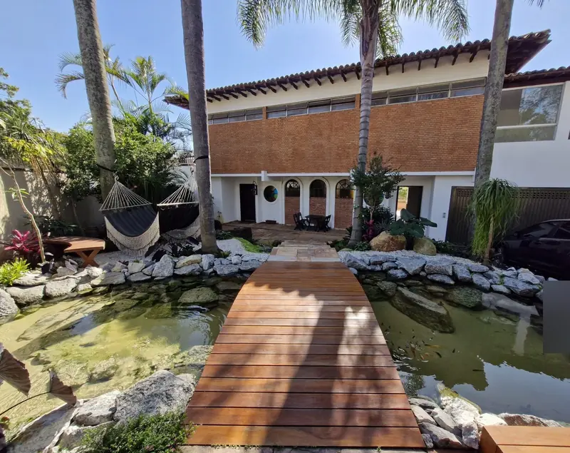

Residencia segura y cerrada
Seguridad monitoreada 24 h en Perdizes, uno de los barrios residenciales más valorados de São Paulo.

4.9+ Superhost Airbnb y Preferred Booking.com · Residencia con seguridad
Una suite exclusiva en una mansión histórica con lago de koi, piscina y jardín. En Perdizes, barrio residencial seguro y sofisticado.
No es el alquiler de la casa entera. Una sola suite ejecutiva privada dentro de una residencia familiar, con acceso exclusivo a las áreas de ocio.
Seguridad monitoreada 24 h en Perdizes, uno de los barrios residenciales más valorados de São Paulo.
Solo una suite de huéspedes en la propiedad. Ni ala de hotel ni ambiente de hostel compartido.
Wi‑Fi de alta velocidad, terreno tranquilo y espacio para concentrarse entre reuniones o conciertos.
Anfitriones que atienden en español para el check-in, recomendaciones y apoyo durante la estancia.
La suite
Hasta cinco huéspedes. Acceso independiente. Áreas de ocio exterior compartidas solo con los propietarios, nunca con una rotación de desconocidos.

Ropa de cama premium, baño privado y un salón refinado para hasta cinco huéspedes. Acceso independiente para entrar y salir a su ritmo, con la calma de una suite realmente privada.

Jardines tropicales, lago con koi y piscina exterior compartidos solo con los propietarios. La calma poco habitual de una residencia privada en medio de la ciudad.

Sala de fitness en el terreno, pesas y equipos disponibles a cualquier hora. Mantenga su rutina sin salir de la propiedad.

Consejos de gastronomía y barrio, apoyo en español y orientación personalizada de anfitriones que viven en la casa, incluido el pub privado para un trago al final del día.
Ubicación
Un barrio residencial tranquilo y de alto nivel, no una franja turística. Cafés y buena mesa a pie; conciertos y el corredor financiero a minutos en coche.
Cafés, panaderías y restaurantes en una de las zonas residenciales más deseadas de São Paulo.
El mapa muestra un área aproximada (unos dos bloques) para proteger la privacidad de la residencia.
Perdizes, São Paulo · ubicación aproximada
Conciertos, deporte y grandes eventos. Cerca para el pitido inicial, tranquilo para dormir después.
Reuniones de negocio, museos y el corredor del skyline sin alojarse en una franja de hoteles.
Compras y servicios prácticos cuando necesita todo bajo un mismo techo.
Recomendamos Uber Black o un taxi oficial del aeropuerto para una llegada cómoda desde vuelos internacionales.
Reseñas
Valoraciones reales de Airbnb y Booking. Hospitalidad en una casa real en Perdizes.
🛡️ Seguridad 24 h · Residencia cerrada · Monitoreo Verisure
FAQ
Sí. La suite tiene acceso privado e independiente. Disfruta de total privacidad en su alojamiento, con acceso a la piscina y los jardines de la residencia compartidos solo con los propietarios, no con otros huéspedes de pago.
Perdizes es uno de los barrios residenciales más seguros y acomodados de São Paulo. La propiedad está cerrada, con seguridad monitoreada (incluido Verisure) y presencia en calle privada. Aun así, use el sentido común de cualquier gran ciudad.
Sí. Al reservar por Airbnb o Booking.com puede usar las principales tarjetas internacionales y las opciones de pago que cada plataforma ofrece en su país (incluido Apple Pay donde esté disponible).
Recomendamos Uber Black o un taxi oficial del aeropuerto. El trayecto suele ser de unos 45-55 minutos según el tráfico. Tras confirmar la reserva, compartimos las instrucciones de llegada de forma privada.
No. Reserva una suite privada dentro de una residencia familiar viva. Esa es la propuesta: exclusividad de una sola suite, no una casa vacía entera. Las áreas de ocio exterior (piscina, jardines, lago con koi, gimnasio) forman parte de la experiencia de la estancia.
Sí. Atendemos en español (también en portugués e inglés) para la reserva, el check-in y las recomendaciones durante la estancia.
Reserve con la protección de la plataforma o escriba a nuestro concierge en español para fechas y dudas sobre tarifas.
Sitio completo (PT / EN / ES) · Perdizes, São Paulo